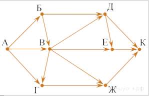
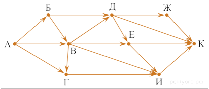
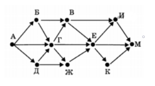
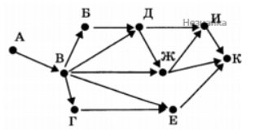

Задание 9. Умение анализировать информацию, представленную в виде схем
1. На рисунке — схема дорог, связывающих города А, Б, В, Г, Д, Е, Ж и К. По каждой дороге можно двигаться только в одном направлении, указанном стрелкой.
Сколько существует различных путей из города А в город К, проходящих через город В?
Решение.
Количество путей до города Х = количество путей добраться в любой из тех городов, из которых есть дорога в Х. При этом если путь должен не проходить через какой-то город, нужно просто не учитывать этот город при подсчёте сумм. А если город, наоборот, обязательно должен лежать на пути, тогда для городов, в которые из нужного города идут дороги, в суммах нужно брать только этот город. С помощью этого наблюдения посчитаем последовательно количество путей до каждого из городов: А = 1 Б = А = 1 В = А + Б = 2 Г = В = 2 (А не учитываем, поскольку путь должен проходить через город В) Д = В = 2 (Б не учитываем, поскольку путь должен проходить через город В) Е = В + Д = 4 Ж = В + Г = 4 К = Д + Е + Ж = 2 + 4 + 4 = 10.Приведем другое решение.
Количество путей из города А в город К, проходящих через город В, равно произведению количества путей из города А в город В и количества путей из города В в город К.Найдем количество путей из города А в город В:
А = 1
Б = А = 1
В = А + Б = 2
Найдем количество путей из города В в город К (при этом В - исходный пункт):
В = 1
Г = В = 1
Ж = В + Г =1 + 1 = 2
Д = В = 1
Е = В + Д = 1 + 1 = 2
К = Д + Е + Ж = 1 + 2 + 2 = 5
Тогда количество путей из города А в город К, проходящих через город В, равно 2 · 5 = 10.Ответ: 10.
2. На рисунке — схема дорог, связывающих города А, Б, В, Г, Д, Е, Ж, И, К. По каждой дороге можно двигаться только в одном направлении, указанном стрелкой.
Сколько существует различных путей из пункта А в пункт К, не проходящих через пункт Е?
Решение.
Количество путей до города Х = количество путей добраться в любой из тех городов, из которых есть дорога в Х.При этом, если путь не должен проходить через какой-то город, нужно просто не учитывать этот город при подсчёте сумм.
А если город, наоборот, обязательно должен лежать на пути, тогда для городов, в которые из нужного города идут дороги, в суммах нужно брать только этот город.С помощью этого наблюдения посчитаем последовательно количество путей до каждого из городов:
А = 1.
Б = А = 1.
В = А + Б = 2.
Г = А + В = 3.
Д = Б + В = 3.
И = В + Г = 5 (Е не учитываем, поскольку путь не должен проходить через город Е).
Ж = Д = 3.
К = Ж + И + Д = 11.
Примечание. Необходимо найти количество различных путей из города А в город К, не проходящих через город Е.Ответ: 11.
3. На карту нанесены 4 города (A, B, C и D).Известно, что:
между городами A и C — три дороги,
между городами C и B — две дороги,
между городами A и B — две дороги,
между городами C и D — две дороги,
между городами B и D — четыре дороги.
По каждой из этих дорог можно ехать в обе стороны.Сколькими различными способами можно проехать из A в D, посещая каждый город не более одного раза?
Построим все возможные ветви для движения из города A. Будем выполнять произведение количества дорог для каждой ветви, так как движение возможно в обе стороны:A * B * C * D = 2 * 2 * 2 = 8 (A и B - две дороги, C и B - две дороги, C и D - две дороги)
A * B * D = 2 * 4 = 8 (A и B - две дороги, B и D - четыре дороги)
A * C * D = 3 * 2 = 6 (A и C - три дороги, C и D - две дороги)
A * C * B * D = 3 * 2 * 4 = 24 (A и C - три дороги, C и B - две дороги, B и D - четыре дороги)
Полученные результаты для каждого способа движения из города A в город D следует сложить:8 + 8 + 6 + 24 = 46
Ответ: 46.
4. На рисунке — схема дорог, связывающих города А, Б, В, Г, Д, Е, Ж, И, К, М. По каждой дороге можно двигаться только в одном направлении, указанном стрелкой.
Сколько существует различных путей, ведущих из города А в город М и не проходящих через город Г?
Решение.
Рассмотрим все случаи, а затем посчитаем, сколько их всего:А-Б-В-И-М
А-Б-В-Е-М
А-Б-В-Е-И-М
А-Д-Ж-Е-М
А-Д-Ж-Е-И-М
А-Д-Ж-Е-К-М
А-Б-В-Е-К-М
Значит, таких путей существует 7Ответ: 7.
5. На рисунке приведена схема соединения компьютеров А, Б, В, Г, Д, Е, Ж, И, К в локальную сеть.
Администратор настроил эту сеть так, что передача данных от компьютера к компьютеру возможна только в направлениях, указанных на рисунке стрелками.Сколько существует различных способов пересылки файла с компьютера А на компьютер К?
Решение.
Рассмотрим все случаи, а затем посчитаем, сколько их всего:1) А-В-Г-Е-К
2) А-В-Е-К
3) А-В-Ж-К
4) А-В-Ж-И-К
5) А-В-Д-И-К
6) А-В-Д-Ж-И-К
7) А-В-Б-Д-И-К
8) А-В-Б-Д-Ж-И-К
9) А-В-Б-Д-Ж-К
10) А-В-Д-Ж-К
Ответ: 10.